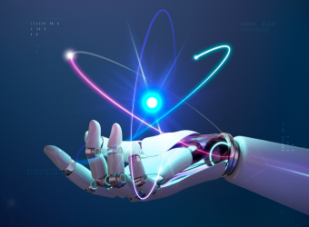

Aprendizado de Máquina
O aprendizado de máquina é uma subárea da inteligência artificial que se concentra no desenvolvimento de algoritmos e modelos que permitem aos computadores aprender com dados e tomar decisões sem serem explicitamente programados. Ele é amplamente usado em aplicações como reconhecimento de voz, recomendações de produtos e carros autônomos.
Redes Neurais Artificiais

Redes neurais artificiais são modelos computacionais inspirados na estrutura e funcionamento do cérebro humano. Elas consistem em camadas de neurônios interconectados que processam informações. Essas redes são usadas em tarefas complexas de aprendizado de máquina, como visão computacional e processamento de linguagem natural.
Ética em Inteligência Artificial
A ética em inteligência artificial é um tópico crítico que aborda questões morais e sociais relacionadas ao uso de IA. Isso inclui preocupações sobre preconceito em algoritmos, privacidade de dados, responsabilidade em sistemas autônomos e o impacto da IA no mercado de trabalho. A ética desempenha um papel fundamental na garantia de que a IA seja usada de maneira justa e responsável.
Processamento de Linguagem Natural
O processamento de linguagem natural é uma área da inteligência artificial que se concentra na interação entre computadores e linguagem humana. Ela é usada em aplicativos como chatbots, tradução automática, análise de sentimentos em texto e resumo automático de texto.
Visão Computacional de IAS

A visão computacional envolve a capacidade das máquinas de interpretar e entender o mundo visual, permitindo que elas analisem e compreendam imagens e vídeos. É usada em reconhecimento facial, detecção de objetos, veículos autônomos e muito mais.
IA em Cuidados de Saúde

A inteligência artificial está desempenhando um papel crescente na área de cuidados de saúde, incluindo diagnóstico médico, triagem de pacientes, identificação de doenças a partir de imagens médicas (como raio-X e ressonância magnética) e personalização de tratamentos médicos.